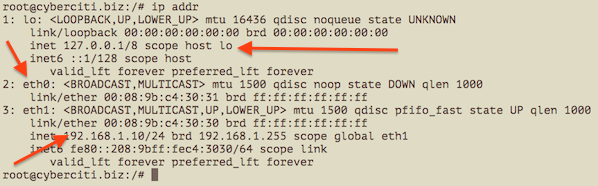

<!DOCTYPE html>
<html lang="en-US" dir="ltr">
<head><meta charset="UTF-8"><meta name="viewport" content="width=device-width, initial-scale=1"> <title>Linux ip Command Examples</title><link rel="canonical" href="http://www.cyberciti.biz/faq/linux-ip-command-examples-usage-syntax/"><link rel="alternate" type="application/rss+xml" title="nixCraft feed" href="http://www.cyberciti.biz/faq/feed/"><link rel="pingback" href="http://www.cyberciti.biz/faq/xmlrpc.php"><link rel="dns-prefetch" href="http://s.w.org/"><link rel="alternate" type="application/rss+xml" title="nixCraft » Linux ip Command Examples Comments Feed" href="http://www.cyberciti.biz/faq/linux-ip-command-examples-usage-syntax/feed/">   <link rel="https://api.w.org/" href="http://www.cyberciti.biz/faq/wp-json/"><link rel="alternate" type="application/json+oembed" href="http://www.cyberciti.biz/faq/wp-json/oembed/1.0/embed?url=http%3A%2F%2Fwww.cyberciti.biz%2Ffaq%2Flinux-ip-command-examples-usage-syntax%2F"><link rel="alternate" type="text/xml+oembed" href="http://www.cyberciti.biz/faq/wp-json/oembed/1.0/embed?url=http%3A%2F%2Fwww.cyberciti.biz%2Ffaq%2Flinux-ip-command-examples-usage-syntax%2F&amp;format=xml"><meta name="description" content="Syntax, information and practical examples about the Linux ip command to configure networking, routing, and tunnels options. "><link rel="shortcut icon" href="favicon.ico">
<link rel="stylesheet" type="text/css" href="index.css" media="all">
</head><body class="template-single">  <div class="container"> <span class="menu_control">≡ Menu</span><ul id="menu-faq" class="menu"><li id="menu-item-145282" class="menu-item menu-item-type-custom menu-item-object-custom menu-item-145282"><a title="nixCraft – Home Page " href="http://www.cyberciti.biz/">Home</a></li><li id="menu-item-145280" class="menu-item menu-item-type-custom menu-item-object-custom menu-item-145280"><a title="About us" href="http://www.cyberciti.biz/tips/about-us">About</a></li><li id="menu-item-145283" class="menu-item menu-item-type-custom menu-item-object-custom menu-item-145283"><a href="https://bash.cyberciti.biz/guide/Main_Page">Linux Shell Scripting TutoriaL</a></li><li id="menu-item-145281" class="menu-item menu-item-type-custom menu-item-object-custom menu-item-145281"><a title="Rss Feed" href="http://www.cyberciti.biz/nixcraft-rss-feed-syndication/">RSS/Feed</a></li></ul><div id="header" class="header"><div id="site_title"><a href="http://www.cyberciti.biz/faq">nixCraft</a></div><div id="site_tagline">Linux and Unix tutorials for new and seasoned sysadmin.</div></div><div class="columns"><div class="content"><div id="post-15621" class="post_box grt top" itemscope="" itemtype="http://schema.org/Article"><meta itemscope="" itemprop="mainEntityOfPage" itemtype="https://schema.org/WebPage" itemid="http://www.cyberciti.biz/faq/linux-ip-command-examples-usage-syntax/"><div class="headline_area"><h1 class="headline" itemprop="headline">Linux ip Command Examples</h1><div class="byline small"> <span class="post_author_intro">by</span> <span class="post_author">Vivek Gite</span> <span class="post_date_intro">on</span> <span class="post_date" title="2012-01-13">January 13, 2012<span style="font-style: italic; text-transform: lowercase;"> last updated </span>March 28, 2016</span><div class="post_cats"> <span class="post_cats_intro">in</span> <a href="http://www.cyberciti.biz/faq/category/commands/" rel="category tag">Commands</a>, <a href="http://www.cyberciti.biz/faq/category/linux/" rel="category tag">Linux</a>, <a href="http://www.cyberciti.biz/faq/category/networking/" rel="category tag">Networking</a></div></div></div><div class="post_content"><div style="float: right; margin-top: 0px; margin-left: 5px;"></div><p><span class="drop_cap">I</span> am a new Linux system admin user. How do I use ip command line utility to display or configure networking, routing, and tunnels on Linux operating systems? How do I configures or displays network interface parameters for a network using TCP/IP on Linux operating systems?<br> <span id="more-15621"></span><br> The ip command is used to assign an address to a network interface and/or configure network interface parameters on Linux operating systems. This command replaces old good and now  deprecated ifconfig command on modern Linux distributions.</p><div class="my_postbox"><table class="postbox" cellspacing="0"><tbody><tr><th>ip command details</th><th></th></tr><tr><td>Description</td><td>Network configuration</td></tr><tr class="even"><td>Category</td><td><a href="http://www.cyberciti.biz/faq/linux-unix-commands/network-software-utilities/" rel="tag">Network Utilities</a></td></tr><tr><td>Difficulty</td><td><a href="http://www.cyberciti.biz/faq/tutorial-difficulty-level/intermediate/" rel="tag">Intermediate</a></td></tr><tr class="even"><td>Root privileges</td><td><a href="http://www.cyberciti.biz/faq/how-can-i-log-in-as-root/" title="See how to login as root user">Yes</a></td></tr><tr><td>Estimated completion time</td><td>20m</td></tr><tr class="even"><td colspan="2"><center><strong>Contents</strong></center><ul><li> <a href="#1">Syntax</a></li><li> <a href="#2">Examples</a></li><li> <a href="#3">List all network interfaces details</a></li><li> <a href="#4">Assign an IP address</a></li><li> <a href="#5">Delete the IP address</a></li><li> <a href="#6">Flush the IP address</a></li><li> <a href="#7">Mark interface as UP or DOWN</a></li><li> <a href="#8">Set the txqueuelen</a></li><li> <a href="#9">Set the MTU</a></li><li> <a href="#10">Show ARP cache</a></li><li> <a href="#11">Add a new ARP entry</a></li><li> <a href="#12">Delete a ARP entry</a></li><li> <a href="#13">Flush ARP cache</a></li><li> <a href="#14">Show routing table</a></li><li> <a href="#15">Add a new route</a></li><li> <a href="#16">Delete a route</a></li></ul></td></tr></tbody></table></div>It is used for the following purposes:<p></p><center>  <ins class="adsbygoogle" style="display: inline-block; width: 336px; height: 280px;" data-ad-client="ca-pub-7825705102693166" data-ad-slot="2404767461"></ins> <p></p></center><p></p><ol><li>Find out which interfaces are configured on the system.</li><li>Query the status of a IP interface.</li><li>Configure the local loop-back, Ethernet and other IP interfaces.</li><li>Mark the interface as up or down.</li><li>Configure and modify default and static routing.</li><li>Configure tunnel over IP.</li><li>Configure ARP or NDISC cache entry.</li><li>Assign IP address, routes, subnet and other IP information to IP interfaces.</li></ol><h2>Purpose</h2><blockquote><p>Use this command to display and <strong>configure the network parameters</strong> for host interfaces.</p></blockquote><h2><a name="1"></a>Syntax</h2><p><kbd>ip OBJECT COMMAND<br> ip [options] OBJECT COMMAND<br> ip OBJECT help</kbd></p><h3>Understanding ip command OBJECTS syntax</h3><p>OBJECTS can be any one of the following and may be written in full or abbreviated form:</p><table border="1"><tbody><tr><td>Object</td><td>Abbreviated form</td><td>Purpose</td></tr><tr><td><kbd><strong>link</strong></kbd></td><td><kbd>l</kbd></td><td>Network device.</td></tr><tr><td><kbd><strong>address</strong></kbd></td><td><kbd>a</kbd><br><kbd>addr</kbd></td><td>Protocol (IP or IPv6) address on a device.</td></tr><tr><td><kbd><strong>addrlabel</strong></kbd></td><td><kbd>addrl</kbd></td><td>Label configuration for protocol address selection.</td></tr><tr><td><kbd><strong>neighbour</strong></kbd></td><td><kbd>n</kbd><br><kbd>neigh</kbd></td><td>ARP or NDISC cache entry.</td></tr><tr><td><kbd><strong>route</strong></kbd></td><td><kbd>r</kbd></td><td>Routing table entry.</td></tr><tr><td><kbd><strong>rule</strong></kbd></td><td><kbd>ru</kbd></td><td>Rule in routing policy database.</td></tr><tr><td><kbd><strong>maddress</strong></kbd></td><td><kbd>m</kbd><br><kbd>maddr</kbd></td><td>Multicast address.</td></tr><tr><td><kbd><strong>mroute</strong></kbd></td><td><kbd>mr</kbd></td><td>Multicast routing cache entry.</td></tr><tr><td><kbd><strong>tunnel</strong></kbd></td><td><kbd>t</kbd></td><td>Tunnel over IP.</td></tr><tr><td><kbd><strong>xfrm</strong></kbd></td><td><kbd>x</kbd></td><td>Framework for IPsec protocol.</td></tr></tbody></table><p>To get information about each object use help command as follows:</p><p><code>ip OBJECT help<br> ip OBJECT h<br> ip a help<br> ip r help</code></p><p class="alert"><span style="color: rgb(255, 0, 0);"><strong>Warning</strong></span>: The commands described below must be executed with care. If you make a mistake, you will loos connectivity to the server. You must take special care while working over the ssh based remote session.</p><h2><a name="2"></a>ip command examples</h2><p>Don’t be intimidated by ip command syntax. Let us get started quickly with examples.</p><h3><a name="3"></a>Displays info about all network interfaces</h3><p>Type the following command to list and show all ip address associated on on all network interfaces:<br> <code>ip a</code><br> OR<br> <code>ip addr</code><br> Sample outputs:<br></p><div id="attachment_15680" style="width: 608px;" class="wp-caption aligncenter"><a href="http://www.cyberciti.biz/faq/linux-ip-command-examples-usage-syntax/ip-command-show-address-ethernet-interface/" rel="attachment wp-att-15680"></a><p class="wp-caption-text">Fig.01 Showing IP address assigned to eth0, eth1, lo using ip command</p></div><br> You can select between IPv4 and IPv6 using the following syntax:<p></p><div class="wp_syntax"><table><tbody><tr><td class="code"><pre class="bash" style="font-family: monospace;"><span style="color: rgb(102, 102, 102); font-style: italic;">### Only show TCP/IP IPv4  ##</span>
<span style="color: rgb(194, 12, 185); font-weight: bold;">ip</span> <span style="color: rgb(102, 0, 51);">-4</span> a
&nbsp;
<span style="color: rgb(102, 102, 102); font-style: italic;">### Only show TCP/IP IPv6  ###</span>
<span style="color: rgb(194, 12, 185); font-weight: bold;">ip</span> <span style="color: rgb(102, 0, 51);">-6</span> a</pre></td></tr></tbody></table></div><p>It is also possible to specify and list particular interface TCP/IP details:</p><div class="wp_syntax"><table><tbody><tr><td class="code"><pre class="bash" style="font-family: monospace;"><span style="color: rgb(102, 102, 102); font-style: italic;">### Only show eth0 interface ###</span>
<span style="color: rgb(194, 12, 185); font-weight: bold;">ip</span> a show eth0
<span style="color: rgb(194, 12, 185); font-weight: bold;">ip</span> a list eth0
<span style="color: rgb(194, 12, 185); font-weight: bold;">ip</span> a show dev eth0
&nbsp;
<span style="color: rgb(102, 102, 102); font-style: italic;">### Only show running interfaces ###</span>
<span style="color: rgb(194, 12, 185); font-weight: bold;">ip link</span> <span style="color: rgb(194, 12, 185); font-weight: bold;">ls</span> up</pre></td></tr></tbody></table></div><h3><a name="4"></a>Assigns the IP address to the interface</h3><p>The syntax is as follows to add an IPv4/IPv6 address:<br> <code>ip a add {ip_addr/mask} dev {interface}</code><br> To assign 192.168.1.200/255.255.255.0 to eth0, enter:<br> <code>ip a add 192.168.1.200/255.255.255.0  dev eth0</code><br> OR<br> <code>ip a add 192.168.1.200/24  dev eth0</code></p><h4>Adding the broadcast address on the interface</h4><p>By default, the ip command does not set any broadcast address unless explicitly requested. So syntax is as follows to set broadcast ADDRESS:<br> <code>ip addr add brd {ADDDRESS-HERE} dev {interface}<br> ip addr add broadcast {ADDDRESS-HERE} dev {interface}<br> ip addr add broadcast 172.20.10.255 dev dummy0</code><br> It is possible to use the special symbols such as <kbd>+</kbd> and <kbd>-</kbd> instead of the broadcast address by setting/resetting the host bits of the interface prex. In this example, add the address 192.168.1.50 with netmask 255.255.255.0 (/24) with standard broadcast and label “eth0Home” to the interface eth0:<br> <code>ip addr add 192.168.1.50/24 brd + dev eth0 label eth0Home</code><br> You can set loopback address to the loopback device lo as follows:<br> <code>ip addr add 127.0.0.1/8 dev lo brd + scope host</code></p><h3><a name="5"></a>Remove / Delete the IP address from the interface</h3><p>The syntax is as follows to remove an IPv4/IPv6 address:<br> <code>ip a del {ipv6_addr_OR_ipv4_addr} dev {interface}</code></p><p>To delete 192.168.1.200/24 from eth0, enter:<br> <code>ip a del 192.168.1.200/24  dev eth0</code></p><h3><a name="6"></a>Flush the IP address from the interface</h3><p>You can delete or remote an IPv4/IPv6 address one-by-one as <a href="#5">described above</a>. However, the flush command can remove as flush the IP address as per given condition. For example, you can delete all the IP addresses from the private network 192.168.2.0/24 using the following command:<br> <code>ip -s -s a f to 192.168.2.0/24</code><br> Sample outputs:</p><pre>2: eth0    inet 192.168.2.201/24 scope global secondary eth0
2: eth0    inet 192.168.2.200/24 scope global eth0
*** Round 1, deleting 2 addresses ***
*** Flush is complete after 1 round ***
</pre><p>You can disable IP address on all the ppp (Point-to-Point) interfaces:<br> <code>ip -4 addr flush label "ppp*"</code></p><p>Here is another example for all the Ethernet interfaces:<br> <code>ip -4 addr flush label "eth*"</code></p><h3><a name="7"></a>How do I change the state of the device to UP or DOWN?</h3><p>The syntax is as follows:<br> <code>ip link set dev {DEVICE} {up|down}</code><br> To make the state of the device eth1 down, enter:<br> <code>ip link set dev eth1 down</code><br> To make the state of the device eth1 up, enter:<br> <code>ip link set dev eth1 up</code></p><h3><a name="8"></a>How do I change the txqueuelen of the device?</h3><p>You can <a href="http://www.cyberciti.biz/faq/gentoo-centos-rhel-debian-fedora-increasing-txqueuelen/">set the length of the transmit queue</a> of the device using ifconfig command or ip command as follows:<br> <code>ip link set txqueuelen {NUMBER} dev {DEVICE}</code><br> In this example, change the default txqueuelen from 1000 to 10000 for the eth0:<br> <code>ip link set txqueuelen 10000 dev eth0<br> ip a list eth0</code></p><h3><a name="9"></a>How do I change the MTU of the device?</h3><p>For <a href="http://www.cyberciti.biz/faq/centos-rhel-redhat-fedora-debian-linux-mtu-size/">gigabit networks you can set  maximum transmission units (MTU)</a> sizes (JumboFrames) for better network performance. The syntax is:<br> <code>ip link set mtu {NUMBER} dev {DEVICE}</code><br> To change the MTU of the device eth0 to 9000, enter:<br> <code>ip link set mtu 9000 dev eth0<br> ip a list eth0</code><br> Sample outputs:</p><pre>2: eth0: <broadcast,multicast,up,lower_up> <strong><span style="color: rgb(0, 153, 0);">mtu 9000</span></strong> qdisc pfifo_fast state UP qlen 1000
    link/ether 00:08:9b:c4:30:30 brd ff:ff:ff:ff:ff:ff
    inet 192.168.1.10/24 brd 192.168.1.255 scope global eth1
    inet6 fe80::208:9bff:fec4:3030/64 scope link
       valid_lft forever preferred_lft forever
</broadcast,multicast,up,lower_up></pre><h3><a name="10"></a>Display neighbour/arp cache</h3><p>The syntax is:<br> <code>ip n show<br> ip neigh show</code><br> Sample outputs (note: I masked out some data with alphabets):</p><pre>74.xx.yy.zz dev eth1 lladdr 00:30:48:yy:zz:ww REACHABLE
10.10.29.66 dev eth0 lladdr 00:30:48:c6:0a:d8 REACHABLE
74.ww.yyy.xxx dev eth1 lladdr 00:1a:30:yy:zz:ww REACHABLE
10.10.29.68 dev eth0 lladdr 00:30:48:33:bc:32 REACHABLE
74.fff.uu.cc dev eth1 lladdr 00:30:48:yy:zz:ww <strong><span style="color: rgb(153, 102, 51);">STALE</span></strong>
74.rr.ww.fff dev eth1 lladdr 00:30:48:yy:zz:ww <strong><span style="color: rgb(102, 51, 51);">DELAY</span></strong>
10.10.29.65 dev eth0 lladdr 00:1a:30:38:a8:00 <strong><span style="color: rgb(0, 153, 0);">REACHABLE</span></strong>
10.10.29.74 dev eth0 lladdr 00:30:48:8e:31:ac REACHABLE</pre><p>The last field show the the state of the “<strong>neighbour unreachability detection</strong>” machine for this entry:</p><ol><li><strong><span style="color: rgb(153, 102, 51);">STALE</span></strong> – The neighbour is valid, but is probably already unreachable, so the kernel will try to check it at the first transmission.</li><li><strong><span style="color: rgb(102, 51, 51);">DELAY</span></strong> – A packet has been sent to the stale neighbour and the kernel is waiting for confirmation.</li><li><strong><span style="color: rgb(0, 153, 0);">REACHABLE</span></strong> – The neighbour is valid and apparently reachable.</li></ol><h3><a name="11"></a>Add a new ARP entry</h3><p>The syntax is:<br> <code>ip neigh add {IP-HERE} lladdr {MAC/LLADDRESS} dev {DEVICE} nud {STATE}</code><br> In this example, add a permanent ARP entry for the neighbour 192.168.1.5 on the device eth0:<br> <code>ip neigh add 192.168.1.5 lladdr 00:1a:30:38:a8:00 dev eth0 nud perm</code><br> Where,</p><table border="1"><tbody><tr><td>neighbour state (nud)</td><td>meaning</td></tr><tr><td><kbd><strong>permanent</strong></kbd></td><td>The neighbour  entry  is  valid forever and can be only be removed administratively</td></tr><tr><td><kbd><strong>noarp</strong></kbd></td><td>The neighbour entry is valid. No attempts to validate this  entry will be made but it can be removed when its lifetime expires.</td></tr><tr><td><kbd><strong>stale</strong></kbd></td><td>The neighbour entry is valid but suspicious.  This option  to  ip neigh does not change the neighbour state if it was valid and the address is not changed by this command.</td></tr><tr><td><kbd><strong>reachable</strong></kbd></td><td>The neighbour entry is valid until the reachability timeout expires.</td></tr></tbody></table><h3><a name="12"></a>Delete a ARP entry</h3><p>The syntax to invalidate or delete an ARP entry for the neighbour 192.168.1.5 on the device eth1 is as follows.<br> <code>ip neigh del {IPAddress} dev {DEVICE}<br> ip neigh del 192.168.1.5 dev eth1</code></p><h4>Change are state to reachable for the neighbour 192.168.1.100 on the device eth1</h4><p><code>ip neigh chg 192.168.1.100 dev eth1 nud reachable</code></p><h3><a name="13"></a>Flush ARP entry</h3><p>This flush or f command flushes neighbour/arp tables, by specifying some condition. The syntax is:<br> <code>ip -s -s n f {IPAddress}</code><br> In this example, flush neighbour/arp table<br> <code>ip -s -s n f 192.168.1.5</code><br> OR<br> <code>ip -s -s n flush 192.168.1.5</code></p><h2>ip route: Routing table management commands</h2><p>Use the following command to manage or manipulate the kernel routing table.</p><h3><a name="14"></a>Show routing table</h3><p>To display the contents of the routing tables:<br> <code>ip r<br> ip r list<br> ip r list [options]<br> ip route</code><br> Sample outputs:</p><pre>default via 192.168.1.254 dev eth1
192.168.1.0/24 dev eth1  proto kernel  scope link  src 192.168.1.10</pre><p>Display routing for 192.168.1.0/24:<br> <code>ip r list 192.168.1.0/24</code><br> Sample outputs:</p><pre>192.168.1.0/24 dev eth1  proto kernel  scope link  src 192.168.1.10</pre><h3><a name="15"></a>Add a new route</h3><p>The syntax is:<br> <code>ip route add {NETWORK/MASK} via {GATEWAYIP}<br> ip route add {NETWORK/MASK} dev {DEVICE}<br> ip route add default {NETWORK/MASK} dev {DEVICE}<br> ip route add default {NETWORK/MASK} via {GATEWAYIP}<br> </code><br> Add <a href="http://www.cyberciti.biz/faq/linux-route-add/">a plain route to network 192.168.1.0/24 via gateway 192.168.1.254</a>:<br> <code>ip route add 192.168.1.0/24 via 192.168.1.254</code><br> To <a href="http://www.cyberciti.biz/faq/linux-setup-default-gateway-with-route-command/">route all traffic via 192.168.1.254 gateway connected via eth0 network</a> interface:<br> <code>ip route add 192.168.1.0/24 dev eth0</code></p><h3><a name="16"></a>Delete a route</h3><p>The syntax is as follows to delete default gateway:<br> <code>ip route del default</code><br> In this example, delete the route created in <a href="#15">previous subsection</a>:<br> <code>ip route del 192.168.1.0/24 dev eth0</code></p><table class="rlcouside"><tbody><tr><td><table class="rlinside" cellspacing="0"><thead><tr><th class="leftcol">Category</th><th>List of Unix and Linux commands</th></tr></thead><tbody><tr><th>File Management</th><td><a href="http://www.cyberciti.biz/faq/linux-unix-appleosx-bsd-cat-command-examples/" title="Linux/Unix cat command examples and syntax">cat</a></td></tr><tr><th>Network Utilities</th><td class="odd"><a href="http://www.cyberciti.biz/faq/linux-unix-dig-command-examples-usage-syntax/" title="Linux/Unix dig command examples and syntax">dig</a> • <a href="http://www.cyberciti.biz/faq/linux-unix-host-command-examples-usage-syntax/" title="Linux/Unix host command examples and syntax">host</a> • <a href="#" title="Linux/Unix ip command examples and syntax">ip</a></td></tr><tr><th>Package Manager</th><td><a href="http://www.cyberciti.biz/faq/ubuntu-lts-debian-linux-apt-command-examples/" title="Linux/Unix apt command examples and syntax">apt</a></td></tr><tr><th>Processes Management</th><td class="odd"><a href="http://www.cyberciti.biz/faq/unix-linux-bg-command-examples-usage-syntax/" title="Linux/Unix bg command examples and syntax">bg</a> • <a href="http://www.cyberciti.biz/faq/unix-linux-chroot-command-examples-usage-syntax/" title="Linux/Unix chroot command examples and syntax">chroot</a> • <a href="http://www.cyberciti.biz/faq/unix-linux-disown-command-examples-usage-syntax/" title="Linux/Unix disown command examples and syntax">disown</a> • <a href="http://www.cyberciti.biz/faq/unix-linux-fg-command-examples-usage-syntax/" title="Linux/Unix fg command examples and syntax">fg</a> • <a href="http://www.cyberciti.biz/faq/unix-linux-jobs-command-examples-usage-syntax/" title="Linux/Unix jobs command examples and syntax">jobs</a> • <a href="http://www.cyberciti.biz/faq/unix-kill-command-examples/" title="Linux/Unix kill command examples and syntax">kill</a> • <a href="http://www.cyberciti.biz/faq/unix-linux-killall-command-examples-usage-syntax/" title="Linux/Unix killall command examples and syntax">killall</a> • <a href="http://www.cyberciti.biz/faq/unix-linux-pwdx-command-examples-usage-syntax/" title="Linux/Unix pwdx command examples and syntax">pwdx</a> • <a href="http://www.cyberciti.biz/faq/unix-linux-time-command-examples-usage-syntax/" title="Linux/Unix time command examples and syntax">time</a> • <a href="http://www.cyberciti.biz/faq/linux-pidof-command-examples-find-pid-of-program/" title="Linux/Unix pidof command examples and syntax">pidof</a> • <a href="http://www.cyberciti.biz/faq/unix-linux-pstree-command-examples-shows-running-processestree/" title="Linux/Unix pstree command examples and syntax">pstree</a></td></tr><tr><th>Searching</th><td><a href="http://www.cyberciti.biz/faq/unix-linux-whereis-command-examples-to-locate-binary/" title="Linux/Unix whereis command examples and syntax">whereis</a> • <a href="http://www.cyberciti.biz/faq/unix-linux-which-command-examples-syntax-to-locate-programs/" title="Linux/Unix which command examples and syntax">which</a></td></tr><tr><th>User Information</th><td class="odd"><a href="http://www.cyberciti.biz/faq/unix-linux-groups-command-examples-syntax-usage/" title="Linux/Unix groups command examples and syntax">groups</a> • <a href="http://www.cyberciti.biz/faq/unix-linux-id-command-examples-usage-syntax/" title="Linux/Unix id command examples and syntax">id</a> • <a href="http://www.cyberciti.biz/faq/linux-unix-last-command-examples/" title="Linux/Unix last command examples and syntax">last</a> • <a href="http://www.cyberciti.biz/faq/linux-unix-lastcomm-command-examples-usage-syntax/" title="Linux/Unix lastcomm command examples and syntax">lastcomm</a> • <a href="http://www.cyberciti.biz/faq/unix-linux-logname-command-examples-syntax-usage/" title="Linux/Unix logname command examples and syntax">logname</a> • <a href="http://www.cyberciti.biz/faq/unix-linux-users-command-examples-syntax-usage/" title="Linux/Unix users command examples and syntax">users</a> • <a href="http://www.cyberciti.biz/faq/unix-linux-w-command-examples-syntax-usage-2/" title="Linux/Unix w command examples and syntax">w</a> • <a href="http://www.cyberciti.biz/faq/unix-linux-who-command-examples-syntax-usage/" title="Linux/Unix who command examples and syntax">who</a> • <a href="http://www.cyberciti.biz/faq/unix-linux-whoami-command-examples-syntax-usage/" title="Linux/Unix whoami command examples and syntax">whoami</a> • <a href="http://www.cyberciti.biz/faq/linux-lid-command-examples-syntax-usage/" title="Linux/Unix lid command examples and syntax">lid</a> • <a href="http://www.cyberciti.biz/faq/linux-members-command-examples-usage-syntax/" title="Linux/Unix members command examples and syntax">members</a></td></tr></tbody></table></td></tr></tbody></table><br> <strong>Share this tutorial on:</strong><div class="nixcraft-social"><a class="nixcraft-link nixcraft-twitter" href="https://twitter.com/intent/tweet?text=Linux+ip+Command+Examples&amp;url=http://www.cyberciti.biz/faq/linux-ip-command-examples-usage-syntax/&amp;via=nixcraft" title="Tweet this tutorial/page">Twitter</a><a class="nixcraft-link nixcraft-facebook" href="https://www.facebook.com/sharer/sharer.php?u=http://www.cyberciti.biz/faq/linux-ip-command-examples-usage-syntax/" title="Share this page/tutorial on Facebook">Facebook</a><a class="nixcraft-link nixcraft-googleplus" href="https://plus.google.com/share?url=http://www.cyberciti.biz/faq/linux-ip-command-examples-usage-syntax/" title="Share this page/tutorial on Google+">Google+</a><a class="nixcraft-link nixcraft-pdf" href="http://www.cyberciti.biz/view/pdf/faq/15621.php" title="Download this tutorial/faq as a free pdf">Download PDF version </a><a class="nixcraft-link nixcraft-error" href="https://nixcraft.wufoo.com/forms/give-us-feedback-for-nixcraft/def/Field209=http://www.cyberciti.biz/faq/linux-ip-command-examples-usage-syntax/&amp;Field211=Linux%20ip%20Command%20Examples" target="_blank" title="Click here to report Typo/Grammar and other Incorrect information">Found an error/typo on this page?</a></div></div></div><div id="comments"><p class="comments_closed">Comments on this entry are closed.</p><ul class="comment_list"><li class="comment even thread-even depth-1" id="comment-113732"><div class="comment_head"> <span class="comment_author">Alyson Calhoun</span> <span class="comment_date">January 24, 2014, 2:05 pm</span></div><div class="comment_text grt" id="comment-body-113732"><p>Great information.  Thank you!</p></div><div class="comment_footer"> <a class="comment_permalink" href="#comment-113732" title="permalink to this comment" rel="nofollow">Link</a></div></li><li class="comment odd alt thread-odd thread-alt depth-1" id="comment-113865"><div class="comment_head"> <span class="comment_author">Zhi</span> <span class="comment_date">January 25, 2014, 1:07 am</span></div><div class="comment_text grt" id="comment-body-113865"><p>what’s the command to set the interface to use DHCP?</p></div><div class="comment_footer"> <a class="comment_permalink" href="#comment-113865" title="permalink to this comment" rel="nofollow">Link</a></div><ul class="children"><li class="comment byuser comment-author-administrator bypostauthor even depth-2" id="comment-113918"><div class="comment_head"> <span class="comment_author"><a href="http://www.cyberciti.biz/tips/about-us" rel="external nofollow" class="url">Nix Craft</a></span> <span class="comment_date">January 25, 2014, 7:09 am</span></div><div class="comment_text grt" id="comment-body-113918"><p>Use <a href="http://www.cyberciti.biz/faq/howto-linux-renew-dhcp-client-ip-address/" rel="nofollow">dhclient command</a>.</p></div><div class="comment_footer"> <a class="comment_permalink" href="#comment-113918" title="permalink to this comment" rel="nofollow">Link</a></div></li></ul></li><li class="comment odd alt thread-even depth-1" id="comment-201583"><div class="comment_head"> <span class="comment_author">Girish</span> <span class="comment_date">June 2, 2014, 3:35 am</span></div><div class="comment_text grt" id="comment-body-201583"><p>Can you please comment if it is possible to configure a point-to-point interface using the “ip” command set? I am especially looking to change the broadcast nature of an eth interface (the link encap and network type) to behave as point-to-point link. At the same time I don’t want to use the PPP, or ay other protocol.</p></div><div class="comment_footer"> <a class="comment_permalink" href="#comment-201583" title="permalink to this comment" rel="nofollow">Link</a></div></li><li class="comment even thread-odd thread-alt depth-1" id="comment-403317"><div class="comment_head"> <span class="comment_author">positive</span> <span class="comment_date">November 15, 2014, 8:09 pm</span></div><div class="comment_text grt" id="comment-body-403317"><p>good job mate</p></div><div class="comment_footer"> <a class="comment_permalink" href="#comment-403317" title="permalink to this comment" rel="nofollow">Link</a></div></li><li class="comment odd alt thread-even depth-1" id="comment-435237"><div class="comment_head"> <span class="comment_author">Kuba</span> <span class="comment_date">December 2, 2014, 10:46 am</span></div><div class="comment_text grt" id="comment-body-435237"><p>Is it possible to make permanent changes using ip command (boot persistent)?</p></div><div class="comment_footer"> <a class="comment_permalink" href="#comment-435237" title="permalink to this comment" rel="nofollow">Link</a></div></li><li class="comment even thread-odd thread-alt depth-1" id="comment-743082"><div class="comment_head"> <span class="comment_author">zed</span> <span class="comment_date">September 5, 2015, 9:29 am</span></div><div class="comment_text grt" id="comment-body-743082"><p>How save configuration for after reboot?<br> there are for example ip route save, but its in binary and mostly useless.<br> ip command need to have ip xxx dump, with make valid ip calls to make same configuration. same as iptables have iptables-save.<br> now, in ages of cloud, we need json interface, so we can all power of ip incorporate in couble easy steps to REST interface.</p></div><div class="comment_footer"> <a class="comment_permalink" href="#comment-743082" title="permalink to this comment" rel="nofollow">Link</a></div></li></ul></div><div class="prev_next"><p class="next_post">Next FAQ: <a href="http://www.cyberciti.biz/faq/howto-restart-iptables-firewall-on-centos-command-line/" rel="next">Restart Iptables Firewall On A CentOS Linux Server</a></p><p class="previous_post">Previous FAQ: <a href="http://www.cyberciti.biz/faq/centos-memory-info-usage-command/" rel="prev">CentOS Linux: Find Memory (RAM) Usage Information Command</a></p></div></div><div style="position: relative; overflow: visible; box-sizing: border-box; min-height: 1px;" class="sidebar"><div style="padding-top: 1px; padding-bottom: 1px; position: static;" class="theiaStickySidebar"><div class="extendedwopts-show extendedwopts-desktop widget widget_text" id=""><div class="textwidget"><div id="bsap_1304534" class="bsarocks bsap_bccb43591680e039e32e874cbcc9e431"></div></div></div><div class="widget search-form" id="thesis-search-widget-3"><form class="search_form" method="get" action="http://www.cyberciti.biz/faq"><p> <input class="input_text" id="s" name="s" value="To search, type and hit enter" type="text"> <input id="searchsubmit" value="Search" type="hidden"></p></form></div><div class="extendedwopts-show extendedwopts-desktop widget widget_text" id=""><div class="textwidget"><ins class="adsbygoogle" style="display: inline-block; width: 300px; height: 600px;" data-ad-client="ca-pub-7825705102693166" data-ad-slot="3521177162"></ins> </div></div><div class="extendedwopts-show extendedwopts-desktop widget widget_text" id=""><p class="widget_title">Featured Articles:</p><div class="textwidget"><ul><li><a href="http://www.cyberciti.biz/open-source/30-cool-best-open-source-softwares-of-2013/">30 Cool Open Source Software I Discovered in 2013</a></li><li><a href="http://www.cyberciti.biz/tips/bash-aliases-mac-centos-linux-unix.html">30 Handy Bash Shell Aliases For Linux / Unix / Mac OS X</a></li><li><a href="http://www.cyberciti.biz/networking/nmap-command-examples-tutorials/">Top 30 Nmap Command Examples For Sys/Network Admins</a></li><li><a href="http://www.cyberciti.biz/tips/php-security-best-practices-tutorial.html">25 PHP Security Best Practices For Sys Admins</a></li><li><a href="http://www.cyberciti.biz/tips/top-linux-monitoring-tools.html">20 Linux System Monitoring Tools Every SysAdmin Should Know</a></li><li><a href="http://www.cyberciti.biz/tips/linux-security.html">20 Linux Server Hardening Security Tips</a></li><li><a href="http://www.cyberciti.biz/tips/linux-iptables-examples.html">Linux: 20 Iptables Examples For New SysAdmins</a></li><li><a href="http://www.cyberciti.biz/tips/linux-unix-bsd-openssh-server-best-practices.html">Top 20 OpenSSH Server Best Security Practices </a></li><li><a href="http://www.cyberciti.biz/tips/linux-unix-bsd-nginx-webserver-security.html">Top 20 Nginx WebServer Best Security Practices</a></li><li><a href="http://www.cyberciti.biz/tips/check-unix-linux-configuration-file-for-syntax-errors.html">20 Examples: Make Sure Unix / Linux Configuration Files Are Free From Syntax Errors</a></li><li><a href="http://www.cyberciti.biz/open-source/best-terminal-applications-for-linux-unix-macosx/">15 Greatest Open Source Terminal Applications Of 2012</a></li><li><a href="http://www.cyberciti.biz/tips/my-10-unix-command-line-mistakes.html">My 10 UNIX Command Line Mistakes</a></li><li><a href="http://www.cyberciti.biz/tips/open-source-project-management-software.html">Top 10 Open Source Web-Based Project Management Software</a></li><li><a href="http://www.cyberciti.biz/tips/download-email-client-for-linux-mac-osx-windows.html">Top 5 Email Client For Linux, Mac OS X, and Windows Users</a></li><li><a href="http://www.cyberciti.biz/tips/linux-laptop.html">The Novice Guide To Buying A Linux Laptop</a></li></ul></div></div><div class="extendedwopts-show extendedwopts-desktop extendedwopts-md-center widget widget_text" id=""><div class="textwidget">  <ins class="adsbygoogle" style="display: inline-block; width: 300px; height: 1057px;" data-ad-client="ca-pub-7825705102693166" data-ad-slot="6636490668"></ins> </div></div><div class="extendedwopts-show extendedwopts-desktop widget widget_text" id=""><p class="widget_title">Don’t Miss Any Linux Tips</p><div class="textwidget"><form style="border: 1px solid rgb(204, 204, 204); padding: 3px; text-align: center;" action="https://feedburner.google.com/fb/a/mailverify" method="post" target="popupwindow"><p>Get nixCraft in your inbox. It's free:</p><p><input value="Your email address" style="width: 140px;" name="email" type="text"></p><input value="Nixcraft-LinuxFreebsdSolarisTipsTricks" name="uri" type="hidden"><input name="loc" value="en_US" type="hidden"><input value="Subscribe" type="submit"></form></div></div><div class="extendedwopts-show extendedwopts-desktop widget widget_text" id=""><div class="textwidget"><center> <ins class="adsbygoogle" style="display: inline-block; width: 300px; height: 250px;" data-ad-client="ca-pub-7825705102693166" data-ad-slot="2272802261"></ins>  </center></div></div></div></div></div><div class="footer"> ©2000-2016 nixCraft. All rights reserved. <a href="http://www.cyberciti.biz/tips/privacy">Privacy</a> - <a href="http://www.cyberciti.biz/tips/disclaimer">Terms of Service</a> - <a href="http://www.cyberciti.biz/tips/contact-us">Questions or Comments</a></div></div><div data-theiastickysidebar-sidebarselector="&quot;#secondary, #sidebar, .sidebar, #primary&quot;" data-theiastickysidebar-options="{&quot;containerSelector&quot;:&quot;&quot;,&quot;additionalMarginTop&quot;:0,&quot;additionalMarginBottom&quot;:0,&quot;updateSidebarHeight&quot;:false,&quot;minWidth&quot;:0,&quot;sidebarBehavior&quot;:&quot;stick-to-bottom&quot;,&quot;disableOnResponsiveLayouts&quot;:true}"></div>


</body>
</html>
